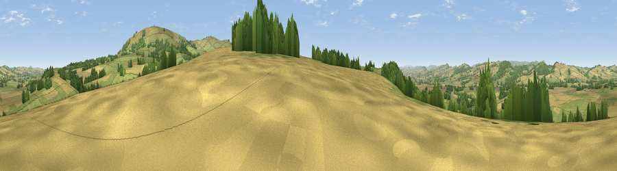

Viewpoint near Tugford
#19191 in England · top 53% of its area beats it · near TugfordWhere it is
The exact computed spot (SO 55875 86675). Click the marker for map links.
The view, rendered

A 360° render of this exact spot computed from the terrain model, tree cover and land cover — summer colours, afternoon light, calibrated against photographs of famous viewpoints. Real trees, hedges and buildings will differ in detail.
The panorama
Grey silhouette: terrain skyline in each direction (720 bearings, Earth curvature and refraction included). Dashed green: skyline with trees (+15 m) and buildings (+8 m) as obstacles. Blue strip: how far the ground is visible on each bearing.
Where the view opens
Wedge length = distance to the farthest visible ground on that bearing (vegetation-aware). Rings at 10, 25 and 50 km.
What fills the view
52% grassland · 35% cropland · 13% woodland
Angular shares of the visible panorama (visual magnitude), not map area. Landscape diversity 0.43 (0–1 Shannon).
Key numbers
More beautiful places nearby
The staircase of upgrades: each row has a higher view potential than everything closer. Driving times are estimates from straight-line distance, calibrated against real road routing — check an actual route before setting out.
| Place | Direction | Drive | Score |
|---|---|---|---|
| Viewpoint near Holdgate | NNE · 2 km | ~5 min | 58.2 |
| Viewpoint near Abdon | E · 3 km | ~8 min | 82.6 |
| Viewpoint near Burwarton | ESE · 4 km | ~10 min | 83.4 |
| Titterstone Clee | SSE · 9 km | ~18 min | 83.8 |
| The Lawley | NNW · 13 km | ~23 min | 85.8 |
| Viewpoint near Little Wenlock | NNE · 22 km | ~37 min | 86.6 |
| North Hill | SSE · 45 km | ~66 min | 86.8 |
| Worcestershire Beacon | SSE · 46 km | ~67 min | 87.1 |
52.47621, -2.65108 · source: screening · position refined by local search. Computed location — check access rights before visiting.